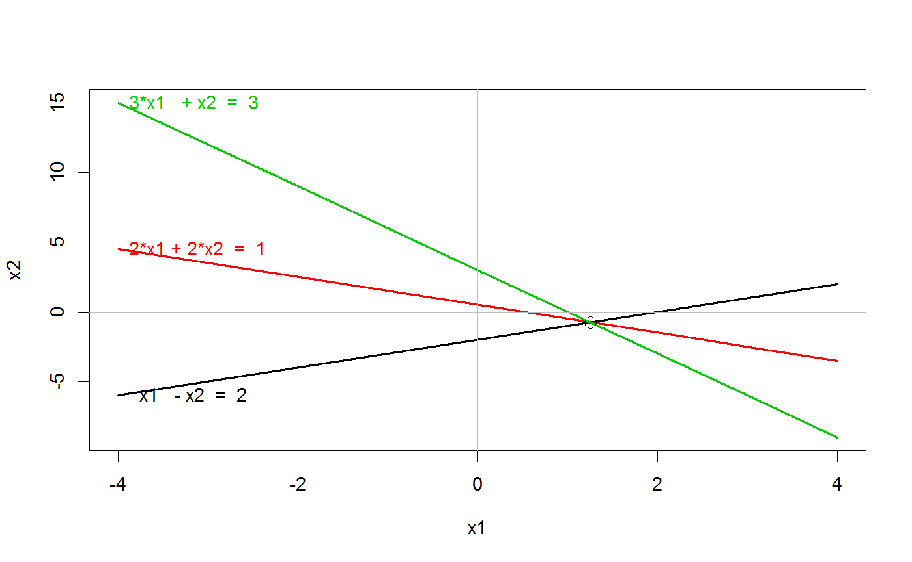
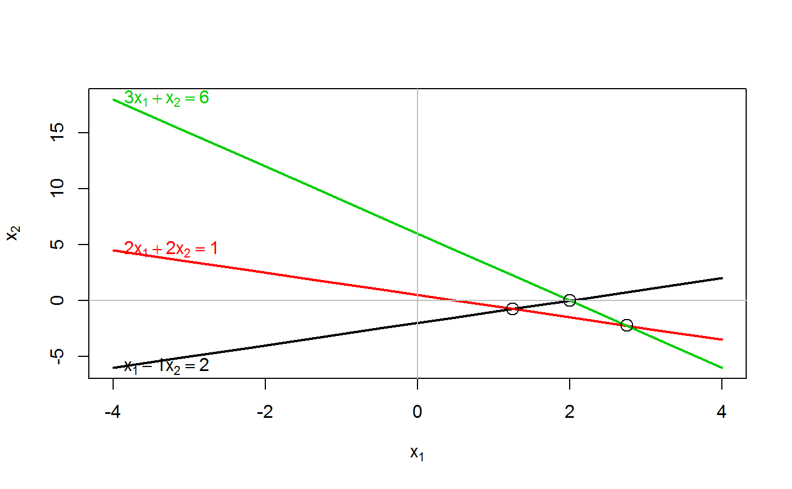

Shows what matrices \(A, b\) look like as the system of linear equations, \(A x = b\) with two unknowns, x1, x2, by plotting a line for each equation.
plotEqn( A, b, vars, xlim = c(-4, 4), ylim, col = 1:nrow(A), lwd = 2, lty = 1, axes = TRUE, labels = TRUE, solution = TRUE )
| A | either the matrix of coefficients of a system of linear equations, or the matrix |
|---|---|
| b | if supplied, the vector of constants on the right hand side of the equations, of length matching
the number of rows of |
| vars | a numeric or character vector of names of the variables.
If supplied, the length must be equal to the number of unknowns in the equations, i.e., 2.
The default is |
| xlim | horizontal axis limits for the first variable |
| ylim | vertical axis limits for the second variable; if missing, |
| col | scalar or vector of colors for the lines, recycled as necessary |
| lwd | scalar or vector of line widths for the lines, recycled as necessary |
| lty | scalar or vector of line types for the lines, recycled as necessary |
| axes | logical; draw horizontal and vertical axes through (0,0)? |
| labels | logical, or a vector of character labels for the equations; if |
| solution | logical; should the solution points for pairs of equations be marked? |
nothing; used for the side effect of making a plot
Fox, J. and Friendly, M. (2016). "Visualizing Simultaneous Linear Equations, Geometric Vectors, and Least-Squares Regression with the matlib Package for R". useR Conference, Stanford, CA, June 27 - June 30, 2016.
#> 1*x1 - 1*x2 = 2 #> 2*x1 + 2*x2 = 1 #> 3*x1 + 1*x2 = 3plotEqn(A,b)#> x[1] - 1*x[2] = 2 #> 2*x[1] + 2*x[2] = 1 #> 3*x[1] + x[2] = 3#> 1*x1 - 1*x2 = 2 #> 2*x1 + 2*x2 = 1 #> 3*x1 + 1*x2 = 6plotEqn(A,b)#> x[1] - 1*x[2] = 2 #> 2*x[1] + 2*x[2] = 1 #> 3*x[1] + x[2] = 6